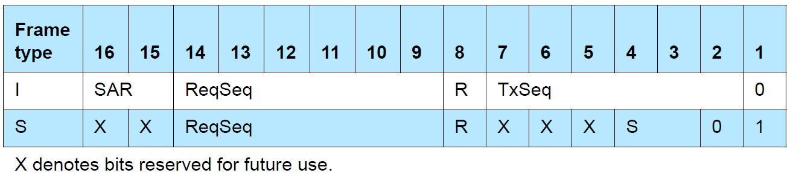

Data Packet Format¶
All L2CAP layer packet fields shall use Little Endian byte order with the exception of the information payload field.
CONNECTION-ORIENTED CHANNELS IN BASIC L2CAP MODE¶

The fields shown are:
- Length: 2 octets (16 bits) the size of the information payloads in octets, excluding the length of the L2CAP header. The length can be up to 65535 octets.
- Channel ID: 2 octets The channel ID (CID) identifies the destination channel endpoint of the packet
- Information payload: 0 to 65535 octets
CONNECTIONLESS DATA CHANNEL IN BASIC L2CAP MODE¶

The fields shown are:
Length: 2 octets
Channel ID: 2 octets Channel ID (0x0002) reserved for connectionless traffic.
Protocol/Service Multiplexer (PSM): 2 octets (minimum)
Information payload: 0 to 65533 octets
Implementations shall support a connectionless MTU (MTUcnl) of 48 octets on the connectionless channel.
Note
The maximum size of the Information payload field decreases accordingly if the PSM field is extended beyond the two octet minimum.
CONNECTION-ORIENTED CHANNEL IN RETRANSMISSION/FLOW CONTROL/STREAMING MODES¶
To support flow control, retransmissions, and streaming, L2CAP PDU types with protocol elements in addition to the Basic L2CAP header are defined. The information frames (I-frames) are used for information transfer between L2CAP entities. The supervisory frames (S-frames) are used to acknowledge I-frames and request retransmission of I-frames.

L2CAP header fields
Length: 2 octets The first two octets in the L2CAP PDU contain the length of the entire L2CAP PDU in octets, excluding the Length and CID field.
For I-frames and S-frames, the Length field therefore includes the octet lengths of the Control, L2CAP SDU Length (when present), Information octets and frame check sequence (FCS) (when present) fields.
Channel ID: 2 octets This field contains the Channel Identification (CID).
Control field (2 or 4 octets)
The Control Field identifies the type of frame. There are three different Control Field formats:
- the Standard Control Field shall be used for Retransmission mode and Flow Control mode.
- the Enhanced Control Field shall be used for Enhanced Retransmission mode and Streaming mode.
- the Extended Control Field may be used for Enhanced Retransmission mode and Streaming mode.
There are two different frame types, Information frame types and Supervisory frame types. Information and Supervisory frames types are distinguished by the least significant bit in the Control Field.
- Information frame format (I-frame) The I-frames are used to transfer information between L2CAP entities.
- Supervisory frame format (S-frame) S-frames are used to acknowledge I-frames and request retransmission of Iframes.
Control Field


Send Sequence Number - TxSeq (6 bits or 14 bits) The send sequence number is used to number each I-frame, to enable sequencing and retransmission.
Receive Sequence Number - ReqSeq (6 bits or 14 bits) The receive sequence number is used by the receiver side to acknowledge I-frames, and in the REJ and SREJ frames to request the retransmission of an I-frame with a specific send sequence number.
Retransmission Disable Bit - R (1 bit) The Retransmission Disable bit is used to implement Flow Control. The receiver sets the bit when its internal receive buffer is full.
When the sender receives a frame with the Retransmission Disable bit set it shall disable the RetransmissionTimer, this causes the sender to stop retransmitting I-frames.
R=0: Normal operation. Sender uses the RetransmissionTimer to control retransmission of I-frames. Sender does not use the MonitorTimer.
R=1: Receiver side requests sender to postpone retransmission of I-frames. Sender monitors signaling with the MonitorTimer. Sender does not use the RetransmissionTimer.
Note
The functions of ReqSeq and R are independent.
Segmentation and Reassembly - SAR (2 bits) The SAR bits define whether an L2CAP SDU is segmented. For segmented SDUs, the SAR bits also define which part of an SDU is in this I-frame, thus allowing one L2CAP SDU to span several I-frames.
An I-frame with SAR=”Start of L2CAP SDU” also contains a length indicator, specifying the number of information octets in the total L2CAP SDU. The encoding of the SAR bits is shown below:

Supervisory function - S (2 bits) The S-bits mark the type of S-frame. There are four types defined: RR (Receiver Ready), REJ (Reject), RNR (Receiver Not Ready) and SREJ (Selective Reject).

Poll - P (1 bit) The P-bit is set to 1 to solicit a response from the receiver. The receiver shall respond immediately with a frame with the F-bit set to 1.
L2CAP SDU Length Field (2 octets) When an SDU spans more than one I-frame, the first I-frame in the sequence shall be identified by SAR=01b=``Start of L2CAP SDU``.The L2CAP SDU Length field shall specify the total number of octets in the SDU. The L2CAP SDU Length field shall be present in I-frames with SAR=01b (Start of L2CAP SDU) and shall not be used in any other I-frames. When the SDU is unsegmented (SAR=00b), the L2CAP SDU Length field is not needed and shall not be present.
Information Payload Field The information payload field consists of an integral number of octets. The maximum number of octets in this field is the same as the negotiated value of the MPS configuration parameter. The maximum number of octets in this field is also limited by the range of the Basic L2CAP header length field.
Frame Check Sequence (2 octets) The Frame Check Sequence (FCS) is 2 octets. The FCS is constructed using the generator polynomial g(D) = D 16 + D 15 + D 2 + 1.
Invalid Frame Detection For Retransmission mode and Flow Control mode, a received PDU shall be regarded as invalid, if one of the following conditions occurs:
- Contains an unknown CID.
- Contains an FCS error.
- Contains a length greater than the maximum PDU payload size (MPS).
- I-frame that has fewer than 8 octets.
- I-frame with SAR=01b (Start of L2CAP SDU) that has fewer than 10 octets.
- I-frame with SAR bits that do not correspond to a normal sequence of either unsegmented or start, continuation, end for the given CID.
- S-frame where the length field is not equal to 4.
CONNECTION-ORIENTED CHANNELS IN LE CREDIT BASED FLOW CONTROL MODE¶
To support LE Credit Based Flow Control Mode, L2CAP PDU type with protocol elements in addition to the Basic L2CAP header are defined. In LE Credit Based Flow Control Mode, the L2CAP PDU on a connection-oriented channel is an LE information frame (LE-frame).